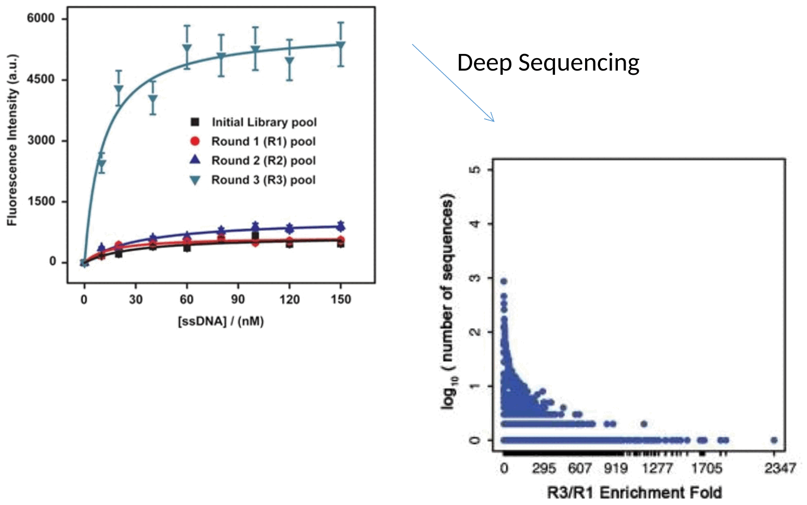
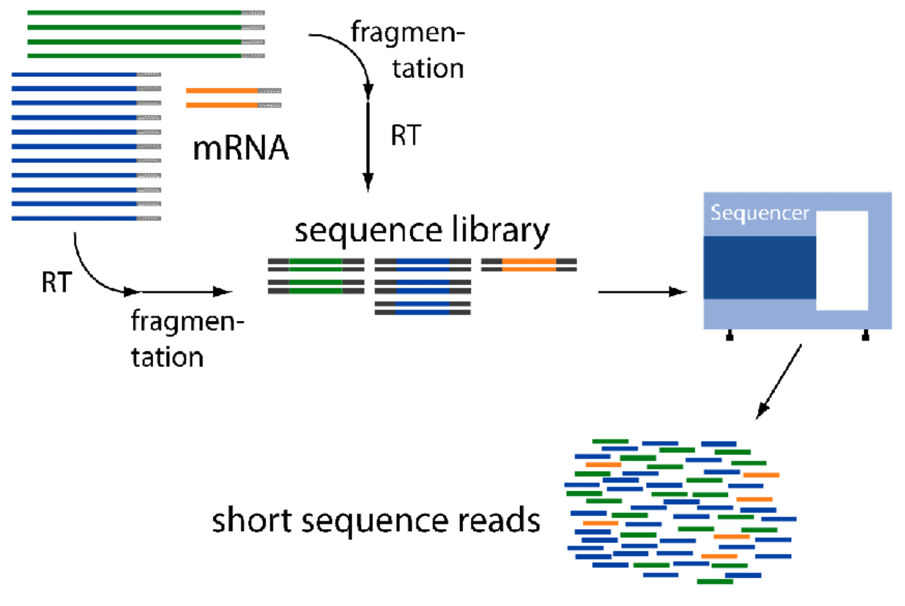
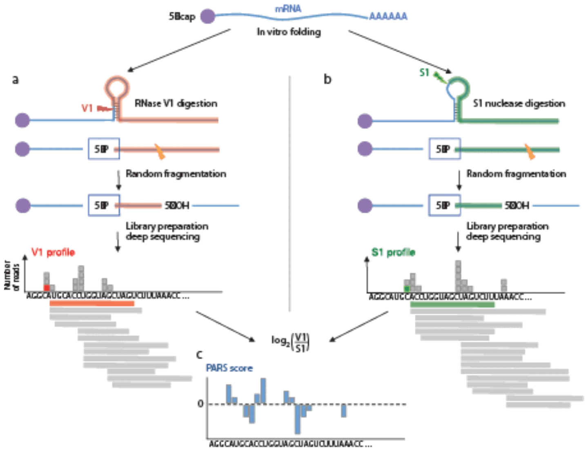
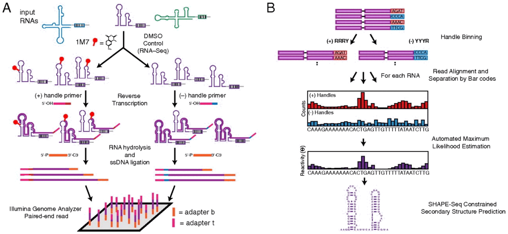

Multiplex characterization of RNAs and DNAs
SHAPE-Seq
- PMID: 21642531
- PMID: 17367143
- PMID: 20554050
- PMID: 17406453

Multiplex characterization of RNAs and DNAs


http://www2.fml.tuebingen.mpg.de/raetsch/members/research/transcriptomics/images/RNA-Sequencing.png
In a more analytical usage, RNA seq has become the most popular way of analyzing gene expression in cells and has largely replaced microarrays for this application. Here, a mRNA is extracted from the sample and then converted to cDNA using reverse transcription. In the process, the adapter sequences for deep sequencing are incorporated, and then read. By counting the number of reads of each sequence, one gets a measure of the relative expression level of these genes in the original sample. By comparing the frequency of a given gene across different samples, one can determine whether that gene is upregulated or downregulated under some conditions. RNA Seq.
